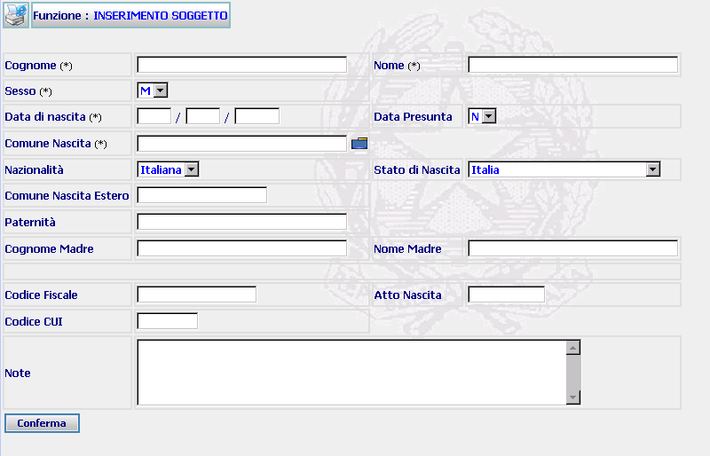

INSERIMENTO SOGGETTO: La funzione consente di inscrivere un soggetto dopo aver verificato che non esiste già attraverso la funzione ricerca soggetto .
LE MASCHERE VIDEO
La funzione viene realizzata attraverso la maschera seguente nella quale occorre compilare i campi presenti nella stessa

COME FARE PER ...
Per inserire un soggetto l'utente deve:
CAMPI
I dati attraverso i quali è possibile effettuare la ricerca sono i seguenti:
|
Cognome |
Campo obbligatorio nel quale va inserito il cognome del soggetto da iscrivere |
|
Nome |
Campo obbligatorio nel quale va inserito il nome del soggetto da iscrivere |
| Sesso | Campo obbligatorio nel quale agendo sulla tendina va inserito il sesso del soggetto da iscrivere |
|
Data di nascita |
Campo nel quale va inserita la data di nascita del soggetto da inserire |
|
Data presunta |
Campo nel quale va specificato attraverso la tendina se la data è presunta o certa |
|
Comune di nascita |
Campo nel quale va inserito il Comune di nascita (digitandolo per intero o selezionandolo attraverso l'apposito Pulsante di Ricerca da Lista Predefinita) del soggetto da iscrivere |
|
Nazionalità |
Campo nel quale va inserita la nazionalità (da selezionare attraverso la relativa tendina) |
|
Stato nascita |
Campo nel quale va inserito lo Stato di nascita (da selezionare attraverso la relativa tendina) |
| Comune di nascita Estero | Campo nel quale va inserito il Comune di nascita del soggetto da iscrivere |
|
Paternità |
Campo facoltativo nel quale va inserita la paternità del soggetto da iscrivere. |
|
Cognome madre |
Campo facoltativo nel quale va inserito il cognome della madre del soggetto da iscrivere |
|
Nome madre |
Campo facoltativo nel quale va inserito il nome della madre del soggetto da iscrivere |
|
Codice fiscale |
Campo facoltativo nel quale va inserito il codice fiscale del soggetto da iscrivere |
|
Atto di nascita |
Campo facoltativo nel quale va inserito il numero dell’atto di nascita del soggetto da iscrivere |
|
Codice CUI |
Campo facoltativo nel quale va inserito il codice unico di identificazione del soggetto da iscrivere |
|
Note |
Campo a testo libero dove inserire eventuali annotazioni relative al soggetto da iscrivere |
PULSANTI
Oltre al pulsante
 di stampa del contesto (videata)
di stampa del contesto (videata)
|
PULSANTE |
DESCRIZIONE |
|
|
A fronte di tale comando, il sistema visualizza la lista predefinita. |
BOTTONI
Oltre ai comandi funzionali relativi al menù verticale sono presenti i seguenti comandi:
|
COMANDI |
DESCRIZIONE |
|
|
A fronte di tale comando, il sistema dopo aver verificato la validità dei dati specificati, presenta la maschera di dettaglio del dettaglio soggetto ovvero, nel caso in cui più soggetti rispondano ai criteri di ricerca impostati, presenta la lista degli omonimi. |
CONTROLLI
A fronte della pressione
del bottone
 , il
sistema verifica che:
, il
sistema verifica che:
tutti i campi siano stati compilati correttamente;
esista uno o più soggetti rispondenti ai canali di ricerca selezionati.
Se il sistema non riscontrerà errori verrà visualizzata la maschera del Dettaglio soggetto.